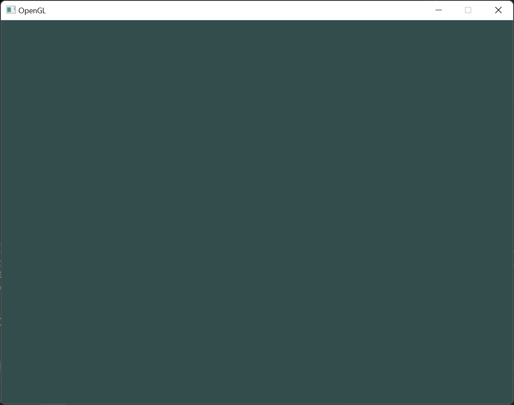

OpenGL
Computer Graphics - OpenGL
What is OpenGL?
- OpenGL® is the industry’s most widely adopted 2D and 3D graphics API
- Powers thousands of applications across a variety of computing platforms
- Independent of windowing systems and operating systems
- Network-transparent and cross-platform
OpenGL enables developers to create high-performance, visually compelling graphics applications on platforms ranging from PCs to supercomputers, across fields like CAD, content creation, energy, entertainment, game development, manufacturing, medical imaging, and virtual reality.
OpenGL gives developers full access to the latest features of modern graphics hardware.
OpenGL Evolution
Immediate Mode (Legacy)
- Fixed function pipeline - easy to learn but inflexible
- Much of OpenGL’s inner workings were hidden
- Developers had limited control over graphics processing
- Very inefficient - leading to deprecation
Core Profile (Modern)
- Programmable shaders - maximum flexibility
- More challenging to learn but worth the effort
- Developers gain deeper understanding of graphics
- Significantly more efficient
- Industry standard approach
Since version 3.2, OpenGL began deprecating immediate mode in favor of the more efficient core profile, which requires modern practices and removes outdated functionality.
Why Core Profile?
Warning
When developing with Core Profile, using deprecated functions results in errors and no rendering.
- Performance: Direct GPU control and significantly more efficient
- Flexibility: Custom rendering pipelines and maximum control
- Future-proof: Modern OpenGL practices
- Learning: Deeper understanding of graphics programming
- Industry relevance: What professionals use today
Our classes focus on OpenGL 3.3 Core Profile because mastering this approach is well worth the effort.
Setting Up OpenGL
The Window and Context Challenge
Important
Before drawing anything, you need to initialize OpenGL by creating an OpenGL context. This context is a state machine that stores all rendering-related data for your application.
- Creating a window and OpenGL context isn’t specified in OpenGL
- The process differs across platforms
- OpenGL is designed for portability
- Developers often use libraries that abstract this process
Your application will then start the event loop, handling tasks like processing window events, updating rendering state, and drawing objects.
Normalized Device Coordinates


Platform Setup
SDL3 Basic Setup
#include <iostream>
#include <SDL3/SDL.h>
int main()
{
if (!SDL_Init(SDL_INIT_VIDEO)) {
std::cout << "SDL_Init failed: " << SDL_GetError() << std::endl;
return -1;
}
SDL_GL_SetAttribute(SDL_GL_CONTEXT_PROFILE_MASK, SDL_GL_CONTEXT_PROFILE_CORE);
SDL_GL_SetAttribute(SDL_GL_CONTEXT_MAJOR_VERSION, 3);
SDL_GL_SetAttribute(SDL_GL_CONTEXT_MINOR_VERSION, 2);
SDL_GL_SetAttribute(SDL_GL_STENCIL_SIZE, 8);
SDL_Window* window = SDL_CreateWindow("OpenGL", 800, 600, SDL_WINDOW_OPENGL);
if (!window) {
std::cout << "Failed to create window: " << SDL_GetError() << std::endl;
SDL_Quit();
return -1;
}
SDL_GLContext context = SDL_GL_CreateContext(window);
if (!context) {
std::cout << "Failed to create OpenGL context: " << SDL_GetError() << std::endl;
SDL_DestroyWindow(window);
SDL_Quit();
return -1;
}
SDL_Event windowEvent;
bool running = true;
while (running) {
while (SDL_PollEvent(&windowEvent)) {
if (windowEvent.type == SDL_EVENT_QUIT) {
running = false;
}
}
SDL_GL_SwapWindow(window);
}
SDL_GL_DestroyContext(context);
SDL_DestroyWindow(window);
SDL_Quit();
return 0;
}OpenGL Context Creation
SDL_GL_SetAttribute(SDL_GL_CONTEXT_PROFILE_MASK, SDL_GL_CONTEXT_PROFILE_CORE);
SDL_GL_SetAttribute(SDL_GL_CONTEXT_MAJOR_VERSION, 3);
SDL_GL_SetAttribute(SDL_GL_CONTEXT_MINOR_VERSION, 2);
SDL_GL_SetAttribute(SDL_GL_STENCIL_SIZE, 8);
SDL_Window* window = SDL_CreateWindow("OpenGL", 800, 600, SDL_WINDOW_OPENGL);
SDL_GLContext context = SDL_GL_CreateContext(window);The GLAD Problem
Important
Issue: Because OpenGL is a specification, it’s up to the graphics driver manufacturers to implement it. However, the location of OpenGL functions may vary depending on the driver version.
- OpenGL functions need to be queried at runtime
- Function pointers must be stored for later use
- Tedious and error-prone to do manually
GLAD is an open-source library that handles all the tedious work of retrieving and managing these OpenGL function pointers for you.
GLAD Usage
You can configure GLAD through its web service to define and load all the relevant OpenGL functions for your specific version of OpenGL.
Manual vs GLAD Function Loading
// Define the function's prototype
typedef void (*GL_GENBUFFERS) (GLsizei, GLuint*);
// Find the function and assign it to a function pointer
GL_GENBUFFERS glGenBuffers = (GL_GENBUFFERS)SDL_GL_GetProcAddress("glGenBuffers");
// Function can now be called as normal
unsigned int buffer;
glGenBuffers(1, &buffer);
printf("%u\n", buffer);Complete SDL3 + GLAD Setup
#include <iostream>
#include <SDL3/SDL.h>
#include <glad/glad.h>
int main()
{
if (!SDL_Init(SDL_INIT_VIDEO)) {
std::cout << "SDL_Init failed: " << SDL_GetError() << std::endl;
return -1;
}
SDL_GL_SetAttribute(SDL_GL_CONTEXT_PROFILE_MASK, SDL_GL_CONTEXT_PROFILE_CORE);
SDL_GL_SetAttribute(SDL_GL_CONTEXT_MAJOR_VERSION, 3);
SDL_GL_SetAttribute(SDL_GL_CONTEXT_MINOR_VERSION, 2);
SDL_GL_SetAttribute(SDL_GL_STENCIL_SIZE, 8);
SDL_Window* window = SDL_CreateWindow("OpenGL", 800, 600, SDL_WINDOW_OPENGL);
if (window == nullptr) {
std::cout << "Failed to create SDL Window: " << SDL_GetError() << std::endl;
SDL_Quit();
return -1;
}
SDL_GLContext context = SDL_GL_CreateContext(window);
if (!context) {
std::cout << "Failed to create OpenGL context: " << SDL_GetError() << std::endl;
SDL_DestroyWindow(window);
SDL_Quit();
return -1;
}
if (!gladLoadGLLoader((GLADloadproc)SDL_GL_GetProcAddress)) {
std::cout << "Failed to initialize GLAD" << std::endl;
SDL_GL_DestroyContext(context);
SDL_DestroyWindow(window);
SDL_Quit();
return -2;
}
SDL_Event windowEvent;
bool running = true;
while (running) {
while (SDL_PollEvent(&windowEvent)) {
if (windowEvent.type == SDL_EVENT_QUIT) {
running = false;
}
}
glClearColor(0.2f, 0.3f, 0.3f, 1.0f);
glClear(GL_COLOR_BUFFER_BIT);
SDL_GL_SwapWindow(window);
}
SDL_GL_DestroyContext(context);
SDL_DestroyWindow(window);
SDL_Quit();
return 0;
}First Result!
The Graphics Pipeline
Pipeline Overview

Graphics Pipeline - Image taken from: https://open.gl/drawing
Vertex Shader
- First programmable stage in the graphics pipeline
- Processes individual vertices
- Applies transformations to convert 3D world coordinates into 2D screen coordinates
- Perspective transformations take place here
- Passes attributes like color, texture coordinates, and normals down the pipeline
Primitive Assembly
- After vertex processing, graphics card groups vertices into primitives
- Basic building blocks: triangles, lines, or points
- Additional drawing modes reduce vertex count:
- Triangle strips, line strips
- Connect primitives continuously
- Form connected lines or meshes
Geometry Shader (Optional)
- Optional stage introduced more recently
- Unlike vertex shader, can output more vertices than it receives
- Operates on entire primitives (triangles, lines)
- Can modify, discard, or generate new primitives
Tip
Use case: Minimize data transfers between CPU and GPU. In voxel games, pass only vertex positions and let geometry shader generate cubes at runtime.
Fragment Shader & Rasterization
- After primitives are processed, fragment shader handles per-pixel operations
- Rasterizer converts visible parts of primitives into pixel-sized fragments
- Interpolated attributes from vertex shader passed to fragment shader
- Example: Triangle with colors at vertices - colors smoothly interpolated across surface
Fragment Shader Capabilities
- Calculates final color of each fragment using:
- Texture coordinates, lighting calculations, and more
- Performs advanced effects: lighting, shadowing, texture mapping
- Can discard fragments - making parts transparent or see-through
- Useful for rendering windows, glass, or other transparent objects
Depth and Stencil Testing
- Fragment shader output passes through depth and stencil testing
- GPU determines which fragments are visible based on depth/stencil rules
- Key concept: Fragments closer to camera obscure fragments farther away
- Allows proper handling of overlapping geometry
Tip
Main takeaway: Depth testing lets the GPU decide fragment visibility based on relative position automatically.
Hello Triangle
Vertex Input
- To start drawing, we first need to provide OpenGL with input vertex data
- OpenGL is a 3D graphics library - all coordinates are in 3D (x, y, z)
- OpenGL only processes coordinates within a specific range
- Coordinates must be between -1.0 and 1.0 on all axes to be visible
Normalized Device Coordinates (NDC)
- Coordinates within the normalized device coordinates (NDC) range are rendered
- Coordinates outside this range are discarded
- After vertex shader processing, coordinates are in NDC space
- x, y, and z values range from -1.0 to 1.0
Triangle in NDC
Vertex Buffer Objects (VBOs)
Important
We need to send vertex data to the GPU efficiently!
- We use Vertex Buffer Objects (VBOs) to store vertices in GPU memory
- Advantage: Send large batches of data at once
- Avoid overhead of sending one vertex at a time
- Vertex shader processes vertices directly from GPU memory - extremely fast!
Creating VBOs
glBufferData Parameters
- Buffer target:
GL_ARRAY_BUFFERin this case - Size of data: using
sizeof(vertices) - Actual vertex data: to store in the buffer
- Usage hint: tells GPU how we intend to use the data
Data set once, used many times (our case)
Data changes occasionally
Data set once, used few times
Vertex Shader Code
#version 330 core
layout (location = 0) in vec2 position;
void main()
{
gl_Position = vec4(position, 0.0, 1.0);
}This GLSL (OpenGL Shading Language) shader: - Takes a 2D position as input - Sets gl_Position to output the position in 3D space - The vertex shader is required - cannot be skipped
Fragment Shader Code
#version 330 core
out vec4 outColor;
void main()
{
outColor = vec4(1.0f, 0.5f, 0.2f, 1.0f); // Orange color
}The fragment shader determines the color of each pixel (fragment) that makes up the shapes drawn on the screen.
Compiling Shaders
const char* vertexShaderSource = R"glsl(
#version 330 core
layout (location = 0) in vec2 position;
void main()
{
gl_Position = vec4(position, 0.0, 1.0);
}
)glsl";
// Create, attach source, and compile
GLuint vertexShader = glCreateShader(GL_VERTEX_SHADER);
glShaderSource(vertexShader, 1, &vertexShaderSource, NULL);
glCompileShader(vertexShader);Shader Error Checking
Warning
Always check for compilation errors!
Fragment Shader Compilation
const char* fragmentShaderSource = R"glsl(
#version 330 core
out vec4 outColor;
void main()
{
outColor = vec4(1.0f, 0.5f, 0.2f, 1.0f); // Orange color
}
)glsl";
GLuint fragmentShader = glCreateShader(GL_FRAGMENT_SHADER);
glShaderSource(fragmentShader, 1, &fragmentShaderSource, NULL);
glCompileShader(fragmentShader);
// Don't forget error checking here too!Linking Shaders into a Program
// Create program
GLuint shaderProgram = glCreateProgram();
// Attach shaders and link
glAttachShader(shaderProgram, vertexShader);
glAttachShader(shaderProgram, fragmentShader);
glLinkProgram(shaderProgram);
// Check for linking errors
glGetProgramiv(shaderProgram, GL_LINK_STATUS, &success);
if (!success) {
glGetProgramInfoLog(shaderProgram, 512, NULL, infoLog);
std::cout << "ERROR::SHADER::PROGRAM::LINKING_FAILED\n" << infoLog << std::endl;
}
// Clean up individual shaders
glDeleteShader(vertexShader);
glDeleteShader(fragmentShader);Using the Shader Program
Linking Vertex Attributes
Important
OpenGL needs to know how to interpret the vertex data and link it to shader attributes.
Vertex Attribute Properties
- Position attribute: two floating point values per vertex (X, Y)
- Data stored as 32-bit (4 byte) floating point values
- Each position: 2 values
- No space between sets of values - tightly packed
- First value at beginning of buffer
glVertexAttribPointer
glVertexAttribPointer(0, 2, GL_FLOAT, GL_FALSE, 2 * sizeof(float), (void*)0);
glEnableVertexAttribArray(0);- 0: Vertex attribute index (matches
layout (location = 0)) - 2: Number of components per attribute (X, Y)
- GL_FLOAT: Data type of each component
- GL_FALSE: Don’t normalize (data already correct format)
- 2 * sizeof(float): Stride (bytes between consecutive attributes)
(void *)0: Offset of first component (0 since position is first)
Vertex Array Objects (VAOs)
Important
VAOs store vertex attribute configuration - mandatory in Core Profile!
// Generate and bind VAO
GLuint vao;
glGenVertexArrays(1, &vao);
glBindVertexArray(vao);
// Configure vertex attributes (stored in VAO)
glBindBuffer(GL_ARRAY_BUFFER, vbo);
glBufferData(GL_ARRAY_BUFFER, sizeof(vertices), vertices, GL_STATIC_DRAW);
glVertexAttribPointer(0, 2, GL_FLOAT, GL_FALSE, 2 * sizeof(float), (void*)0);
glEnableVertexAttribArray(0);
// Unbind VAO
glBindVertexArray(0);VAO Benefits
- Encapsulates all vertex attribute configurations
- Set up once, reuse many times
- Switch between objects by binding different VAOs
- Stores: vertex attribute configurations, enabled/disabled state, VBO associations

Drawing the Triangle
Orange Triangle Result

Orange Triangle
Uniforms for Dynamic Colors
Tip
Uniforms are global variables that can be changed from CPU code after shader compilation!
Red Triangle Result

Red Triangle
Animated Colors
Make things exciting by varying color with time:
Adding Per-Vertex Colors
Why Per-Vertex Colors?
- Uniforms are great, but color per vertex is more flexible
- Let’s add a color attribute to each vertex
- We’ll add red, green, blue components (transparency not needed)
Updated Shaders for Color
Shader Input/Output Linking

Warning
Make sure that the output of the vertex shader and input of the fragment shader have the same name, or the shaders will not be linked properly.
Updated Vertex Attribute Setup
GLint posAttrib = glGetAttribLocation(shaderProgram, "position");
glEnableVertexAttribArray(posAttrib);
glVertexAttribPointer(posAttrib, 2, GL_FLOAT, GL_FALSE, 5 * sizeof(float), 0);
GLint colAttrib = glGetAttribLocation(shaderProgram, "color");
glEnableVertexAttribArray(colAttrib);
glVertexAttribPointer(colAttrib, 3, GL_FLOAT, GL_FALSE, 5 * sizeof(float),
(void*)(2 * sizeof(float)));- Stride now
5 * sizeof(float)(5 values per vertex: X, Y, R, G, B) - Color offset is
2 * sizeof(float)(skip X, Y to get to R, G, B)
Colorful Triangle Result

Element Buffer Objects
The Rectangle Problem
Drawing a rectangle requires two triangles:
float vertices[] = {
// first triangle
0.5f, 0.5f, // top right
0.5f, -0.5f, // bottom right
-0.5f, 0.5f, // top left
// second triangle
0.5f, -0.5f, // bottom right (DUPLICATE!)
-0.5f, -0.5f, // bottom left
-0.5f, 0.5f // top left (DUPLICATE!)
};Warning
50% vertex duplication! This gets much worse with complex models having thousands of triangles.
Element Buffer Objects (EBOs)
Tip
Better solution: Store only unique vertices and specify draw order with indices!
Creating and Using EBOs
// Create EBO
GLuint ebo;
glGenBuffers(1, &ebo);
// Bind and fill with indices
glBindBuffer(GL_ELEMENT_ARRAY_BUFFER, ebo);
glBufferData(GL_ELEMENT_ARRAY_BUFFER, sizeof(indices), indices, GL_STATIC_DRAW);
// Draw with indices instead of glDrawArrays
glDrawElements(GL_TRIANGLES, 6, GL_UNSIGNED_INT, 0);glDrawElements Parameters
- GL_TRIANGLES: Drawing mode (same as glDrawArrays)
- 6: Number of elements/indices to draw
- GL_UNSIGNED_INT: Type of indices
- 0: Offset in EBO (or pass index array if not using EBO)
VAOs and EBOs
Tip
Great news: VAOs automatically store EBO bindings!
- EBO bound while VAO is bound gets stored as VAO’s EBO
- Binding VAO automatically binds its EBO
- Don’t unbind EBO before unbinding VAO

Complete EBO Setup
// 1. Bind Vertex Array Object
glBindVertexArray(VAO);
// 2. Copy vertices to vertex buffer
glBindBuffer(GL_ARRAY_BUFFER, VBO);
glBufferData(GL_ARRAY_BUFFER, sizeof(vertices), vertices, GL_STATIC_DRAW);
// 3. Copy indices to element buffer
glBindBuffer(GL_ELEMENT_ARRAY_BUFFER, EBO);
glBufferData(GL_ELEMENT_ARRAY_BUFFER, sizeof(indices), indices, GL_STATIC_DRAW);
// 4. Set vertex attribute pointers
glVertexAttribPointer(0, 2, GL_FLOAT, GL_FALSE, 2 * sizeof(float), (void*)0);
glEnableVertexAttribArray(0);
// Drawing code (in render loop):
glUseProgram(shaderProgram);
glBindVertexArray(VAO);
glDrawElements(GL_TRIANGLES, 6, GL_UNSIGNED_INT, 0);
glBindVertexArray(0);Rectangle Result

Wireframe Mode
Debugging with Wireframes
Tip
Wireframe mode is perfect for debugging geometry and understanding mesh structure!
// Enable wireframe mode
glPolygonMode(GL_FRONT_AND_BACK, GL_LINE);
// Your drawing calls here...
// Return to solid mode
glPolygonMode(GL_FRONT_AND_BACK, GL_FILL);- GL_FRONT_AND_BACK: Apply to front and back of all triangles
- GL_LINE: Draw as lines instead of filled triangles
- Any subsequent drawing calls render in wireframe until changed back
Wireframe Result

Best Practices & Next Steps
Memory Management & Cleanup
Important
Always clean up OpenGL resources!
// Clean up at program end
glDeleteVertexArrays(1, &vao);
glDeleteBuffers(1, &vbo);
glDeleteBuffers(1, &ebo);
glDeleteProgram(shaderProgram);- Always check for shader compilation/linking errors
- Delete OpenGL objects when done
- Unbind objects after use to avoid accidents
- Use VAOs to encapsulate state
- Batch similar draw calls for performance
Common Pitfalls
Warning
Watch out for these common mistakes:
- Forgetting to bind VAO before drawing
- Not checking shader compilation errors
- Incorrect vertex attribute configuration
- Memory leaks from not deleting OpenGL objects
- Using deprecated immediate mode functions
- Unbinding EBO before unbinding VAO
Debugging Strategies
Drawing Modes Reference
Primitive Types:
GL_TRIANGLES: Individual trianglesGL_TRIANGLE_STRIP: Connected trianglesGL_TRIANGLE_FAN: Fan of trianglesGL_LINES: Individual line segmentsGL_LINE_STRIP: Connected linesGL_POINTS: Individual points
What We’ve Learned
- OpenGL Core Profile fundamentals
- Window and context creation with SDL3
- Graphics pipeline understanding
- Vertex and fragment shaders
- VBOs, VAOs, and EBOs for efficient rendering
- Per-vertex attributes and interpolation
- Indexed rendering for memory efficiency
- Debugging techniques and best practices
Next Steps in Your OpenGL Journey
Immediate Next Topics:
- Textures: Adding images to surfaces
- Transformations: Moving objects in 3D space
- Camera systems: Viewing the 3D world
- Basic lighting: Realistic illumination
Advanced Topics:
- Materials: Surface properties
- Advanced lighting: Multiple lights, shadows
- Post-processing: Screen effects
- Geometry shaders: Procedural geometry
- Compute shaders: GPU computation
Essential Resources
Learning Resources:
- learnopengl.com - Excellent tutorials
- open.gl - Clean, modern approach
- OpenGL Programming Guide - The “Red Book”
- OpenGL SuperBible - Comprehensive reference
Tools & Libraries:
- GLAD - Function loading
- SDL3/GLFW - Windowing systems
- GLM - Mathematics library
- Assimp - Model loading
- stb_image - Image loading
Key Takeaways
Note
Remember These Core Concepts:
- Core Profile requires explicit state management
- VAOs are mandatory and store vertex configuration
- Shaders give you complete control over rendering
- Error checking is essential for debugging
- Modern OpenGL is more complex but much more powerful
Practice makes perfect - start with simple shapes and gradually build complexity!
Questions?
Thank you for following along!
Remember: Modern OpenGL might seem complex at first, but understanding these fundamentals will give you the power to create amazing graphics applications.
Keep experimenting and don’t be afraid to break things - that’s how you learn!

OpenGL Core Profile 3.3+